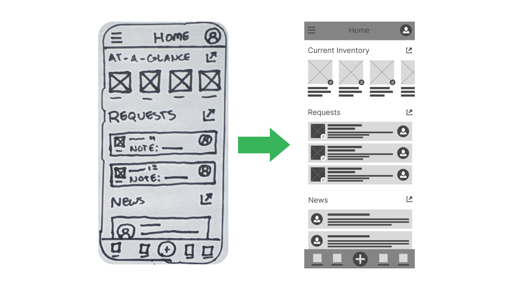
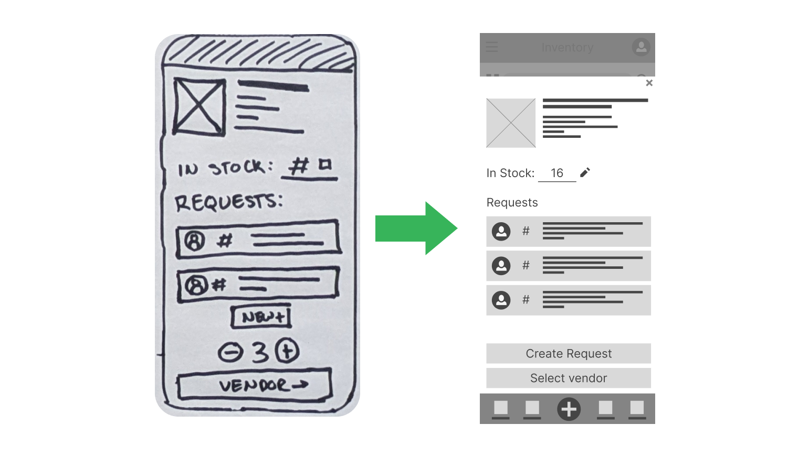
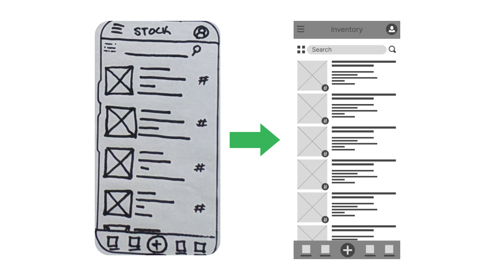
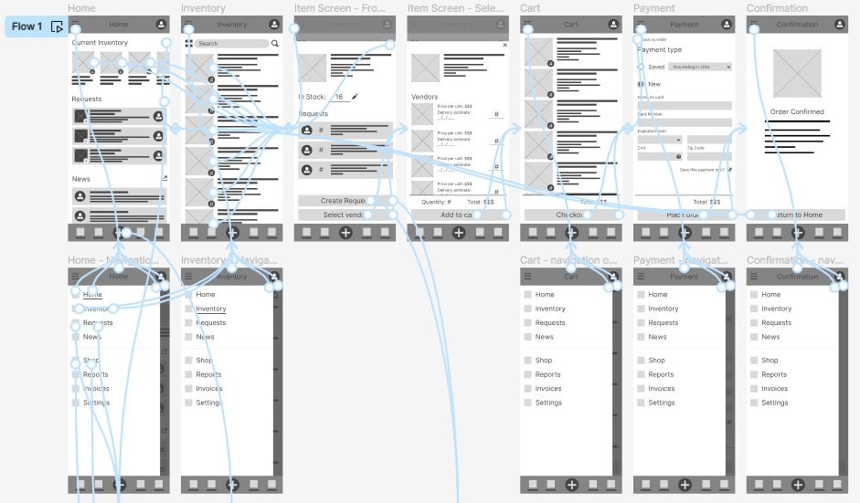
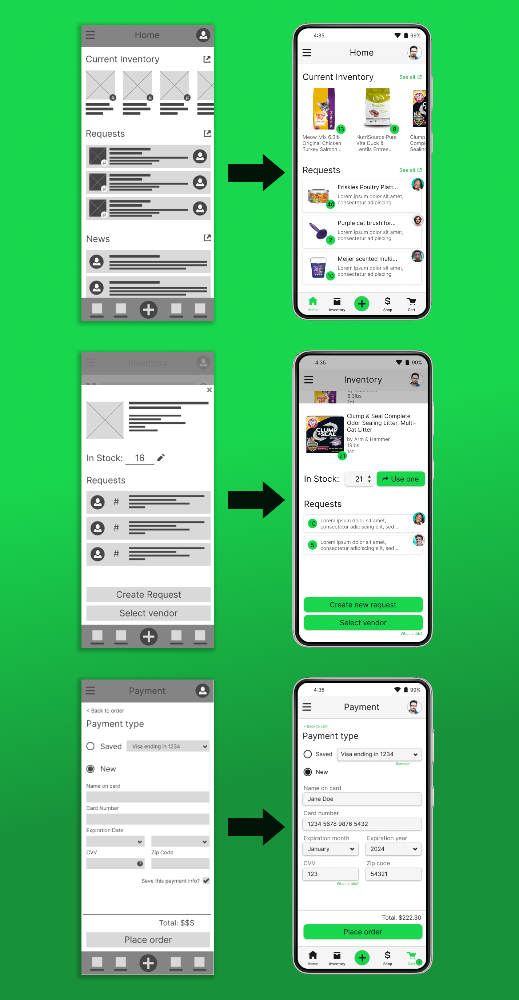
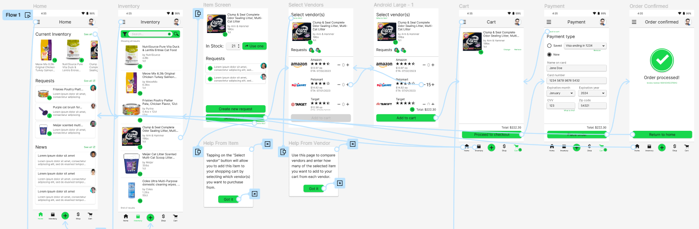

Case study: Cat shelter inventory app
Mobile UX Design | 15 minute read
I created an inventory management app for a local cat shelter as a major deliverable for my enrollment in Google's UX Design Certificate program. The research problem was hypothetical, but everything from user journey mapping through ideation was inspired by my time volunteering with a local cat shelter and noticing the needs of fellow volunteers, especially on the admin side. While this is a theoretical problem space, I conducted usability studies with friends and associates, which was helpful for refining my designs.
Project purpose
The primary goal of this project was to streamline and digitize the inventory management and reordering processes for volunteers at a local cat shelter. Traditionally, items such as cat litter, food, and cleaning supplies were kept onsite and ordered as needed from various vendors, which volunteers found frustrating, disorganized, and cumbersome. With an inventory management app, volunteers are granted anywhere/anytime access to inventory levels, communication among volunteers is amplified, and volunteers have the benefit of a single interface for ordering and maintaining supplies.
My role as the UX generalist on this project was to manage the entire UX Design Thinking cycle including facilitating user and competitive research, designing a solution, and moderating usability studies with stakeholders.
Discovery and Problem Framing
I began this project with user research. Again, since this project was hypothetical, I drew on my own experiences as the primary source of information, but nonetheless found value in practicing empathy for the intended stakeholders through various Design Thinking activities. Through journey mapping and persona creation (pictured below), I identified 4 major problem areas that the solution needed to address:
- Time constraints. The organization is 100% run by unpaid volunteers who have fulltime jobs and other life obligations they must prioritize, resulting in limitations on how much time they can spend volunteering (typically, only one shift per week).
- Lack of transparency. Without physically being at the shelter, volunteers had no way of knowing what items and how much of each item was available in stock. This would result in shortages or overpurchasing.
- Record keeping. Ordering inventory from various vendors left an inconsistent and difficult-to-manage paper trail.
Ideating
From here, I started ideating the solution using a modified version of Crazy Eights and situated the solution in the lives of my intended users with storyboarding exercises. I knew I wanted to create a mobile app (this was a requirement of the certificate program) and began with rough sketches of a few key screens/features that I knew would be necessary:

After settling on some starter designs (annotated as "FINAL" above), I moved on to creating digital wireframes using Figma. Here are a few examples of the evolution from the paper wireframes to their first-draft digital counterparts:
  Prototyping and Testing
Once I wired up a functional prototype of the lofi digital mockups, I began facilitating usability tests with friends and colleagues (an interactive version is available here):
For usability testing, I recruited 5 (real life) participants and asked them to complete a few rounds of interactive scenario-based activities (more information on my research plan and findings are available in the "5 - Validation" folder in the project files, which can be downloaded at the top of this page). After using affinity clustering to analyze qualitative feedback, I uncovered a few key themes for product improvement:
- All users had a difficult time understanding the Vendors section during the purchasing process.
- Most users expressed confusion when trying to get to the previous screen or undo an action.
- Some users found it difficult to return to the home screen from various pages in the app.
With these insights, I applied the necessary changes to the designs and moved on to creating high fidelity prototypes in Figma.
Final Prototypes
The hifi prototype I created only supports one user flow: reordering 15 Clump & Seal cat litter units from Petsmart using the solution. However, it is the culmination of all I learned, starting with exercises in empathy and finishing with the feedback and consequential updates from usability testing with real connections. Here are a few samples showing changes from lofi mockups to hifi prototypes:
...and here's an overview of the final prototype, which can be accessed here:
Retrospective
A major limitation of this project, of course, is that I didn't engage stakeholders until the first usability study. However, I learned a lot about the Design Thinking process in general as I progressed through this project: as this was my first proper go at it, I valued the exposure to the process and learned a lot along the way of the importance of empathizing with users, taking the time to properly frame the problem, and designing iteratively before handing off to development. Working with real people for the usability study was invaluable to identifying its worth: as the only designer on this project, I needed the external feedback to get out of my own "filter bubble", so to speak, and build a solution that could be accepted by those it directly impacts.
Looking back on this project with what I know now, I see that many steps and critical Design Thinking methods were skipped that could have really benefited this exercise. For example, “How Might We” questions and abstraction laddering would have bolstered the strength of my problem statements, and engaging stakeholders earlier in the design process would have saved me a lot of time working on earlier low-fidelity mockups. At any rate, I learned a lot about Figma and feel very comfortable working with some of its more advanced features for prototyping and designing.
Future work for this project would be to conduct another round of usability testing, this time (ideally) with actual cat shelter volunteers and applying the feedback from this testing to further iterate on my designs. Once I feel that I've reached saturation and/or consensus (i.e., once my designs are ready to ship), I would spend some time annotating my designs with technical details and accessibility requirements to hand off to development. As is the case with any design project, continuous and ongoing exploratory research on user acceptance and new feature requests would be necessary for maintaining the platform and ensuring ongoing user satisfaction.